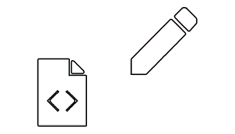
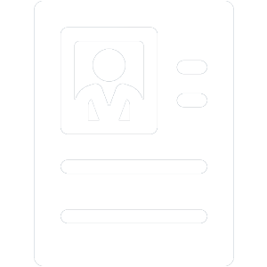

Mes réalisations
Vous trouverez ici les réalisations dont je suis le plus fier, que ce soit du Design, Marketing, ou de la Tech! Elles sont le fruit de mon travail et je travaille ardemment à ce que d'autres viennent s'y joindre. J'espère qu'elles vous plairont!
Réalisation Tech #2
Ici, j'ai pu améliorer et peaufiner mes compétences précdemment acquises en HTML-CSS et apprendre à implémenter des animations!

Réalisation Design #2
Pour ce travail, j'ai appris à mettre en scène et composer des éléments graphiques et typographiques afin de créer une infographie agréable à l'oeil et naturelle à la lecture!

Mon CV
Vous retrouverez ici mon Curriculum Vitae